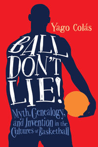

<body bgcolor="#FFFFFF" text="#000000" link="#0000FF" vlink="#CC0000" alink="#CC0000"><center><hr width="350" size="1" align="center" noshade><p>
<i>Examining the nature, origin, and purpose of popular myths in basketball, past and present</i>
<br><hr width="350" size="1" align="center" noshade><p><a href="https://cdcshoppingcart.uchicago.edu/Cart/ChicagoBook.aspx?ISBN=&&PRESS=temple" target="_top">Buy this book!</a> | <a href="https://cdcshoppingcart.uchicago.edu/Cart/Cart.aspx?PRESS=temple" target="_top">View Cart</a> | <a href="https://cdcshoppingcart.uchicago.edu/Cart/Cart.aspx?PRESS=temple" target="_top">Check Out</a></p><p></p></center><!--none//--><h1>Ball Don't Lie!</h1>
<H2>Myth, Genealogy, and Invention in the Cultures of Basketball</H2>
<h3>Yago Colás</h3>
paper: $19.95, Mar 16<BR>EAN:&nbsp;978-1-4399-1243-0<BR><font color=#990033>Not Yet Published Preorder</FONT><font size=-7><br>&nbsp;</font></p><p class="info">cloth: $79.50, Mar 16<BR>EAN:&nbsp;978-1-4399-1242-3<BR><font color=#990033>Not Yet Published Preorder</FONT><font size=-7><br>&nbsp;</font></p><p class="info">e-book: $19.95, <BR>EAN:&nbsp;978-1-4399-1244-7<BR><font color=#990033>Not Yet Published Preorder</FONT><font size=-7><br>&nbsp;</font></p></p></td></tr></table>
<BR> <p class="info">226 pp<BR> 6 x 9<BR> <p class="info"><font size=-7>&nbsp;</font></p><p class="info">
</P><BLOCKQUOTE><p>
“<i>In this compelling critical dissection of a truly fascinating sport, Yago Colás effectively breaks down the game of basketball in ways social, cultural, and political. As Rasheed Wallace said, ‘</i>Ball <i>don’t lie!’ Neither does this book</i>.”—<b>Todd Boyd</b>, the Katherine and Frank Price Endowed Chair for the Study of Race and Popular Culture at the University of Southern California School of Cinematic Arts and author of <i>Young, Black, Rich and Famous: The Rise of the NBA, the Hip Hop Invasion and the Transformation of American Culture
<br /></i>
<br></BLOCKQUOTE>
<p>
Pro basketball player Rasheed Wallace often exclaimed the pragmatic truth “<i>Ball </i>don’t lie!” during a game, as a protest against a referee’s bad calls. But the slogan, which originated in pickup games, brings the reality of a racialized urban playground into mainstream American popular culture. <br>
<p>In <i>Ball Don’t Lie!, </i>Yago Colás traces the various forms of power at work in the intersections between basketball, culture, and society from the game’s invention to the present day. He critiques existing popular myths concerning the history of basketball, contextualizes them, and presents an alternative history of the sport inspired by innovations. Colás emphasizes the creative prerogative of players and the ways in which their innovations shape—and are shaped by—broader cultural and social phenomena.
<br /><i>
<br />Ball Don't Lie!&nbsp;</i>shows that basketball cannot be reduced to a single, fixed or timeless essence but instead is a continually evolving exhibition of physical culture that flexibly adapts to and sparks changes in American society.
<br>
<P CLASS="top"><A HREF="#top">BACK TO TOP</A></P>&nbsp;
<BR>&nbsp;
<h2>Reviews</h2>
<p>
“Ball Don’t Lie!<i> is an original, unique, well-conceived, and well-executed work on the history and culture of basketball. In an accessible and engaging writing style, Colás tackles basketball from the perspective of a literary critic. He cleverly sets up each chapter with a myth and then he goes about deconstructing it from a variety of angles. This book can help change how we teach and write about sport</i>.”—<b>Aram Goudsouzian</b>, Chair of the Department of History at the University of Memphis and author of <i>King of the Court: Bill Russell and the Basketball Revolution
<br /></i>
<br>
<P CLASS="top"><A HREF="#top">BACK TO TOP</A></P>&nbsp;<P>
</P><BR>&nbsp;
<H2>About the Author(s)</H2><p>
<b>Yago Colás</b> teaches in the Department of Comparative Literature and in the Residential College at the University of Michigan.
<br>
<P CLASS="top"><A HREF="#top">BACK TO TOP</A></P>
<p><h2>Subject Categories</h2><A HREF="/tempress/sports.html" TARGET="_top">Sports</a><BR><A HREF="/tempress/cultural.html" TARGET="_top">Cultural Studies</a><BR><A HREF="/tempress/american.html" TARGET="_top">American Studies</a><BR><A HREF="/tempress/race.html" TARGET="_top">Race and Ethnicity</a>
</p>
<P><I><a href="http://www.temple.edu/tempress/sporting.html" onMouseOver="window.status='Click for other books in this series!'; return true;" onMouseOut="window.status="; return true;" target="_top”><p>
Sporting
<br>
</p><p>
As an international cultural activity for athleticism, spectatorship, and global cultural exchange, sport is unmatched by any other force on earth. And yet it remains a consistently understudied dimension of history and cultural studies. <i>Sporting</i>, edited by Amy Bass, aims to contribute to the study of sport by publishing works by people across a range of disciplines, by professional sportswriters, and by athletes to add substance to our still emerging notion of globalization.
<br />
<br></p>
<p align="center"><a href="https://cdcshoppingcart.uchicago.edu/Cart/ChicagoBook.aspx?ISBN=&&PRESS=temple" target="_top">Buy this book!</a> | <a href="https://cdcshoppingcart.uchicago.edu/Cart/Cart.aspx?PRESS=temple" target="_top">View Cart</a> | <a href="https://cdcshoppingcart.uchicago.edu/Cart/Cart.aspx?PRESS=temple" target="_top">Check Out</a></p><p><font face="Arial" size="1"><a href="copyright.html" onMouseOver="window.status='Web Copyright Policy';return true;" onMouseOut="window.status=''" title="Web Copyright Policy">&copy;</a> <a href="http://www.temple.edu" target="new" onMouseOver="window.status='Link to Temple University home page';return true;" onMouseOut="window.status=''" title="Link to Temple University home page">Temple University</a>. All Rights Reserved. http://www.temple.edu/tempress/titles/2361_reg.html</font></p>